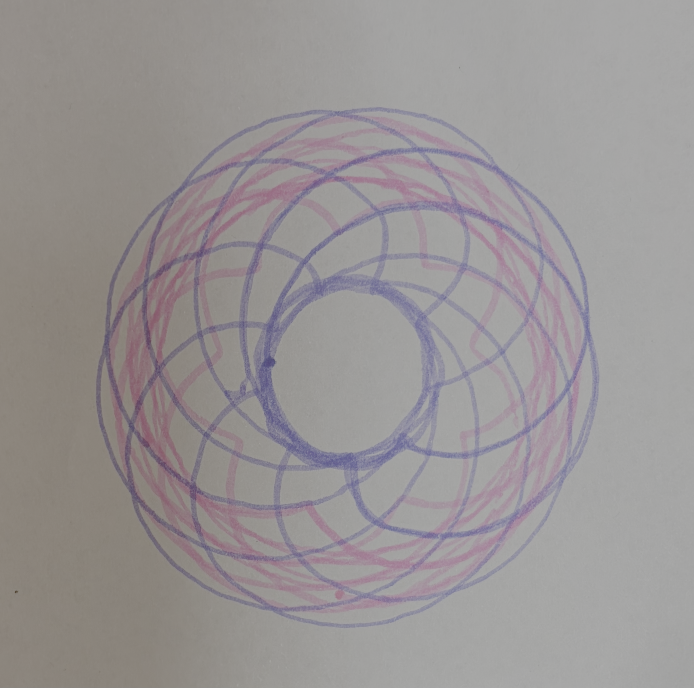
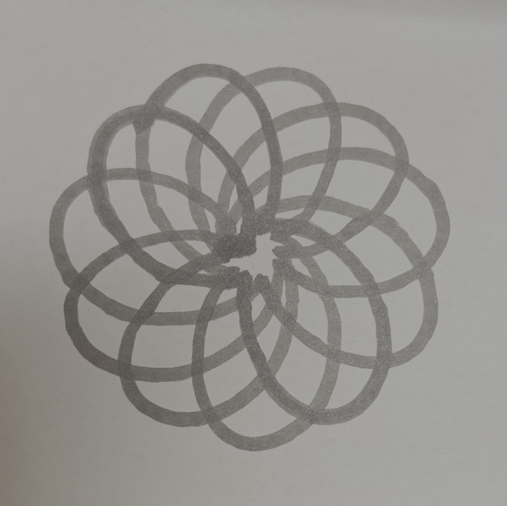

Project Portfolio



Project 5: Spirograph
In this we used our Spike Prime kit to make a spirograph. It was challenging to find a design that would stay on the paper in the bounds that I wanted it to stay in. By moving the 2 motors at different speeds it makes a visually interesting design.